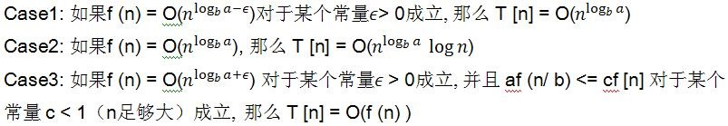

快速排序的Onlogn是如何计算的
在学习算法的过程当中，涉及到了算法的效率问题，这里有一个时间复杂度可以用来衡量算法在时间上的消耗，当时看冒泡排序的时间复杂度很好理解，但是快速排序的nlogn就弄不明白了，决定研究一下。
这里回顾下冒泡的时间复杂度计算过程，比较简单，我们一般在写冒泡排序的代码时，就是套上了2层循环，其中对n的值进行变化。冒泡排序实际是拿每一个元素和后面的元素进行依次比较，所以每轮比较后将会把当前未排序的数字中最大或最小的值排到最后，故每次比较的次数都会减一，也就是第二层循环会递减，排完n-1次后，第一个数不需要再排列，其时间复杂度的计算过程如下：
(n-1)+(n-2)+(n-3)+…+1+0 一共n个数的比较过程
(n-1)*(n-1+1)/2=(n^2-n)/2
舍弃低次幂得到O=n^2
快速排序用的是分治法加递归，这里贴上java的实现代码
1 | static void quick_sort(int array[], int left, int right) { |
这里有一个叫主定理的东西：T [n] = aT[n/b] + f (n)
其中 a >= 1 and b > 1 是常量 并且 f (n) 是一个渐近正函数，为了使用这个主定理，需要考虑下列三种情况：

快排每次把一个问题分成两个子问题，则有：
T[n]=2T[n/2]+O(n), O(n)为partition()的时间复杂度。
对比主定理，此时的a=2, b=2, f(n)=O(n)
那么：nlogba=n, 属于case2，所以快排的时间复杂度为O(nlogn)
说实话，我还是有点迷糊，这里只有一个公式，并不知道公式是怎么来的，而且还有其它的计算方法。后来还了解到涉及到分治和递归的算法的时间复杂度都会有log，这块还要抽空回过头来研究一下。